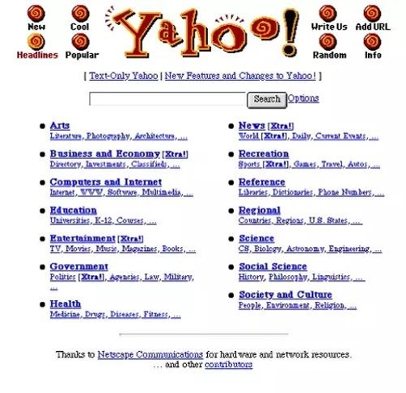
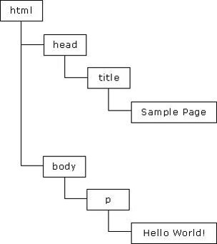

javascript的概述和历史：
- JavaScript作为赋予网页活力与交互性的主要手段之一，早已成为web设计师和开发人员的必备技能。鼎鼎大名的Javascript，典型的高富帅，如果你没有用过就太out了，不过当它诞生是一个屌丝时，真的没有想到能发展到如今的地位......
- 因为JavaScript是被人误解和误用最多的主流编程语言，很多人将它看作Java等面向对象编程语言的功能不全的小兄弟，甚至贬为雕虫小技，对它不屑一顾。而如今，随着越来越多的程序员转向浏览器/服务器模式开发，更加上WEB2.0和Ajax的兴起，JavaScript已经被推到了舞台中心，人们开始认识到，JavaScript绝非一种容易学习和掌握的技术，它同时具有面向对象，过程和函数型语言三类语言的特性，将灵活性与强大功能完美结合，迄今为止，它的惊人潜力还远远没有正真释放出来。
- 上古时代的浏览器Netscape中， 那个时候的网页真是乏善可陈， 主要是些丑陋的静态文本和简单的图片， 和现在的页面相比，差的实在太远了， 不信你请看著名的Yahoo 网站：

- 当互联网刚开始兴起时，用户的数据需要全部在服务器端处理，这在网速非常慢的当时使用户的上网体验非常痛苦。Brendan Eich（ JavaScript的发明人）有一回用公司的Netscape上网购物的时候，需要注册用户，填了一个表单， 点击了提交按钮，等待了38秒，然后服务器告诉他："对不起，您忘了选择性别了"。他几乎要崩溃："这么简单的问题浏览器怎么不告诉我，还得让我把数据提交到几千公里外的服务器网站，然后在那里检查才能发现问题吗！"。于是Brendan Eich 去找老板反馈问题，老板说： "我们Netscape公司也早有此意， 要不你来设计一个吧"，但是老板对当下的java非常感兴趣。Brendan Eich很郁闷， 但是也没有办法， 他对java 毫无兴趣， 为了应付公司的任务， 他只花了10天就设计了出来，由于设计时间太短，一些细节考虑得不够严谨，导致后来很长一段时间，Javascript写出来的程序混乱不堪。
- 如果预见到未来这种语言会成为互联网第一大语言，全世界有成千上万的学习者，他会不会多花一点时间呢?最终，1995年Natscape公司决定在即将发行的Netcape Navigator2.0中加入一个称之为LiveScript的脚本语言，用户客户端数据验证。
- 后来NetScript与SUN公司联手及时完成LiveScript实现，就在Netcape Navigator2.0即将发布前，Netscape将其更名为JavaScript，目的是为了利用Java这个因特网当时的时髦词汇，Netscape的赌注最终得到了回报，JavaScript从此变成了因特网的必备组件。Brendan Eich最初遇到的问题简直就是小菜一碟了， 做个简单的表单验证，就解决问题了。
- 除此以外JavaScript 还可以操作DOM树。
如图：

有了这棵树， JavaScript就能大展身手，它可以定位到DOM树中任意一个节点， 然后对这个节点进行操作，例如隐藏节点、显示节点、改变颜色、获得文本的值， 改变文本的值 ，添加一个响应点击事件的函数等等等等， 几乎可以为所欲为了。这些操作可以立刻展示出效果来，你完全不用刷新网页。这些操作完全是内部进行的，html源码并不会改变， 所以有时候你打开html源码，会发现这些源码和你在浏览器中看的效果并不一致，那就是JavaScript在背后改变了这个DOM树了。
- 不只是操作DOM， JavaScript还能控制浏览器， 比如打开窗口，在一个窗口内前进，后退，获得浏览器的名称，版本等等。你可能要问了，为啥还要获得浏览器的名称和版本呢？因为JavaScript1.0的成功，Netscape在它的3.0版本中发布了1.1版，恰巧那个时候，微软决定进军浏览器，发布了IE3.0并搭载了一个JavaScript的克隆版，叫做Jscript（这个命名是为了避免与NetScape潜在的许可纠纷），微软步入Web浏览器领域的这重要一步虽然令其声名狼藉，但也成为了JavaScript语言反正过程中的重要一步。
- 在Netscape 和IE 进行浏览器之战的期间，他们都争相在自己的浏览器中支持Javascript, 并且为了锁定程序员，还开发了很多自己浏览器的独特功能，有些功能只能在IE用，有些只能在Netscape 用， 所以必须的判断是什么浏览器，这样才能特殊处理。不管怎么说，这些功能让浏览器中的网页变的更加动态了，更加有趣好玩了。但Javascript被困在浏览器和网页上，别的什么也干不了。这也是为什么有的人将Javascript被贬为雕虫小技，对它不屑一顾了。
- 在微软进入后，有3个不同的JavaScript版本同时存在：Netscape Navigator3.0中的JavaScript，IE中的Jscript以及CEnvi中的ScriptEase，与其他编程语言不同的是，JavaScript并没有一个标准来统一其语法或特性，而这3种不同的版本恰恰突出了这个问题。1997年，JavaScript1.1作为一个草案提交给欧洲计算机制造商协会（ECMA），第39技术委员会（TC39）被委派来"标准化一个通用、跨平台、中利于厂商的脚本语言的语法和语义" 。
- 由来自Netscape，Sun，微软、Borland和其他一些对脚本编程感兴趣的公司的程序员组成的TC39锻炼出了ECMA-262，该标准定义了叫做ECMAScript的全新的脚本语言，从此Web浏览器就开始努力将ECMAScript作为JavaScript实现的基础。互联网的发展超出了所有人的预料，JavaScript被应用在几乎每一个网站上，但它在浏览器中运行， 没法像java 那样访问网络，也就没有办法调用服务器端的接口来获取数据。用户只能通过GET或者POST向服务器发送请求，这时候服务器返回的数据是整个页面，而不是页面中的一个片段， 也就是说整个页面都得刷新一遍， 哪怕是页面中只有一个文字的改变。
- 1998年，IE5中引入一个新的功能：XMLHttpRequest，这个新功能将允许JavaScript直接向服务器发出接口调用。这个过程就是访问一下服务器端处理登陆的接口， IE5先干别的事儿，JavaScript得到服务器端的返回数据以后，用下IE5的这个函数。这其实就是异步调用，如果服务器处理和网络速度都足够快的话，用户就会发现：咦，我没有刷新整个页面，竟然已经登录了啊。IE都没有料到，这个功能带来了一场革命： 这种方式可以使得网页局部刷新，让用户浏览网页的体验极佳，尤其是Google 地图，Gmail 等应用让互联网应用火了起来。其他浏览器也迅速跟进，实现了类似功能，各种各样交互性极佳的网站如雨后春笋般出现。
- 而像VB和Delphi这样的语言再也无法嘲笑JavaScript了，因为他们绝望的发现，他们擅长的桌面应用慢慢的都被搬到了互联网上，没人再喜欢他们了。上面的那种处理方式称为AJAX即"Asynchronous Javascript And XML"（异步的JavaScript和XML），其实异步挺好，但是XML真正的数据很少，标签反而占了大头，把数据都给淹没了。
- Javascript的语法，里边有个叫对象的东西, 它有一个花括号，在括号内部，对象的属性以名称和值对的形式 (name : value) 来定义，属性由逗号分隔。这种结构完全可以表达上面的xml内容。而且还支持数组，这样表达多个对象也不在话下。更重要的是，如果采用这种结构， Javascript根本不用什么XML解析器去解析了，它就是Javascript语言的一部分。直接拿来用即可。这种简洁的格式叫做JSON, 并且和服务器约定， 都用JSON来传输数据。至于XML, 还是让Java这样的老学究去用吧。
- HTML结构层，CSS样式层，而Javascript （加上AJAX, JSON）行为层。前端编程三个部分形成了。ExtJS, prototype, JQuery这些框架把前端编程推向另外一个高峰。甚至出现了AngularJS 这样的奇葩，实现了SPA(单一页面应用程序)，实在是难于想象。Javascript发明十几年以后，又一位大牛Ryan Dahl于2009年把Javascript放到了服务器端，这就是node.js。越来越多使用node.js的网站证明， javascript的确可以在服务器端立足，并且有一个巨大的优势：前端和后端都用javascript！
javascript的组成：尽管ECMAscript是一个重要的标准,但它并不是JavaScript的唯一的部分，当然，也不是唯一被标准化的部分。实际上，一个完整的JavaScript实现是由一下3个不同的部分组成的。
- 核心（ECMAScript）
- 文档对象模型（DOM）
- 浏览器对象模型（BOM）
- 而下面两个就是前文说到的浏览器大战而产生的拥有大量不兼容的地方
javascript是什么：简单来说，JavaScript是一种可以用来给网页增加交互性的编程语言。也常被称为"脚本语言"。学习它的用途和好处：
- 所有主流浏览器都支持JavaScript
- 基本所有的网页都会用到JavaScript
- 可以让网页呈现各种动态效果
- 学习环境只要有文本编辑器就可以编写JavaScript代码
javascript的学习要求：
- 非必要条件：数学功底，英文功底，其他程序语言的基础
- 必要条件：HTML+CSS2基础好，尤其CSS2的样式使用要求灵活
- 主观条件：对实现前端效果有兴趣，肯做练习和作业，并喜欢研究页面各种特效的实现原理
- JavaScript是：脚本语言（行为）
如：onclick="this.style.width = '800px';this.style.height = '400px';"
JavaScript实现原理：
- 要想学好js首先经常在网上去看一些效果，自己思考的效果，设计的效果
- 然后想办法实现它，思考它应该如何实现，如何布局，用js去修改它哪些css样式的变化能得到我们想要的
- 例如我们想让一个元素移出我们的视线的方法：
1、display:none;显示为无/ visibility:hidden;隐藏
2、width \ height设置为0，并溢出隐藏
3、透明度为0
4、left \ top
5、拿一个背景色DIV盖住它
6、margin负值